Experimentar
Antes do caderno, as mãos. Na Sopa das Vogais, as letras viraram ingrediente. Nas aulas de matemática, a quantidade é contada com o corpo, na quadra.
"o numeral representa a quantidade!"
Matrículas abertas 2027 · vagas da Educação Infantil ao Ensino Médio
(85) 99603-4409 →Guararapes · Fortaleza desde 1990
No ADM, a criança mexe, pergunta, erra, tenta de novo e descobre. Há 35 anos a gente ensina assim: com o aluno no centro e a sala de aula indo muito além das quatro paredes.
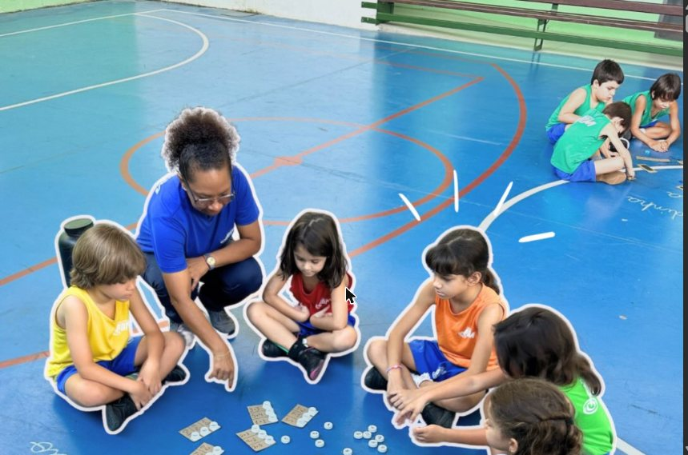
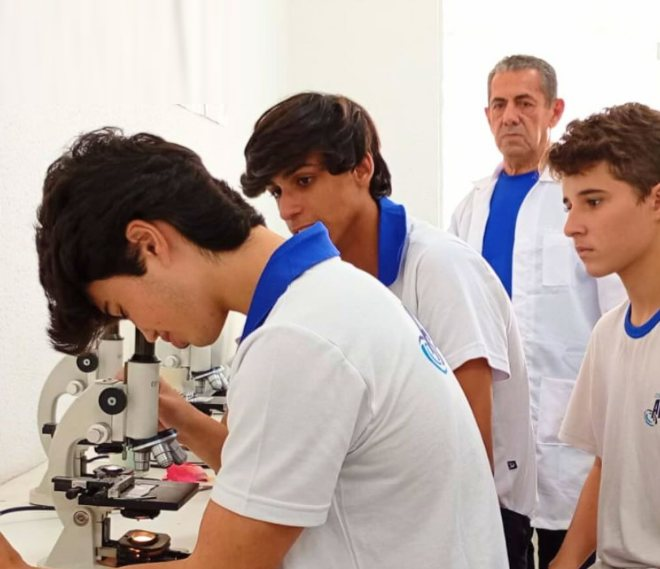
Nossa proposta
É o que acontece numa segunda-feira qualquer. A gente parte do que a criança já sabe, cria uma situação que desafia e deixa ela chegar lá, com a mediação do professor.
Antes do caderno, as mãos. Na Sopa das Vogais, as letras viraram ingrediente. Nas aulas de matemática, a quantidade é contada com o corpo, na quadra.
"o numeral representa a quantidade!"
Os pequenos plantaram sementes de girassol e acompanham a germinação dia após dia. Aprender a esperar e a registrar também é conteúdo.
dia 6: apareceu a primeira folha
Palavras escondidas pela escola, letras móveis para remontá-las. No 8º ano, uma exposição inteira sobre o NAFTA. O aluno sai autor, não espectador.
quem descobre, não esquece
Segmentos
Cada fase tem espaço, rotina e equipe pensados para ela. E o fio que costura tudo é o mesmo: o aluno no centro.
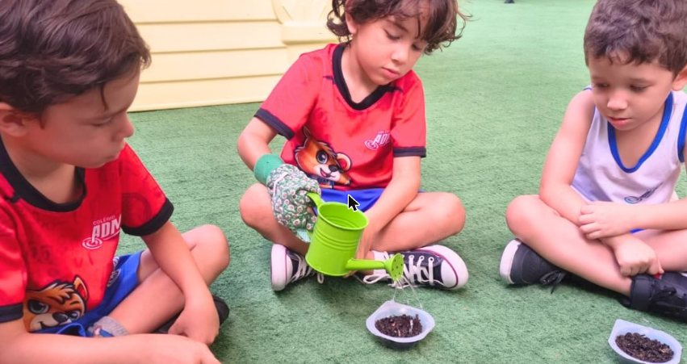
Na Educação Infantil a criança aprende com o corpo inteiro: pintura, música, culinária, terra na mão, parque e muita conversa. É aqui que nasce a autonomia e o gosto por descobrir.
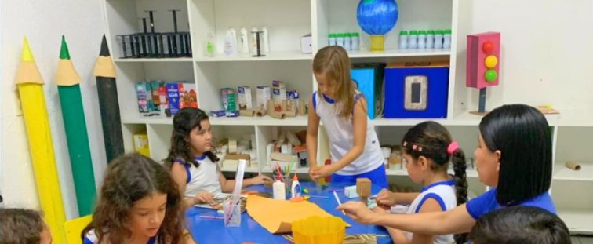
Do 1º ao 5º ano a alfabetização se consolida e a curiosidade ganha método. Projetos, leitura diária, artes e ciências caminham juntos, sempre com registro e partilha.
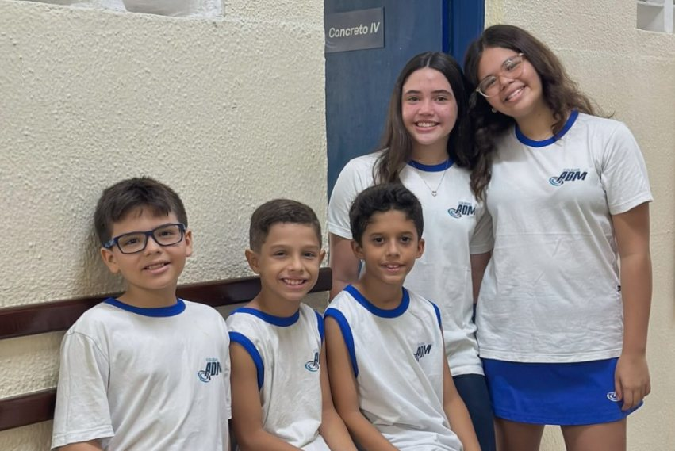
No 6º ao 9º ano o aluno pesquisa, apresenta e defende ideias. Exposições como a do 8º ano sobre o NAFTA mostram o que ele consegue quando é tratado como protagonista.
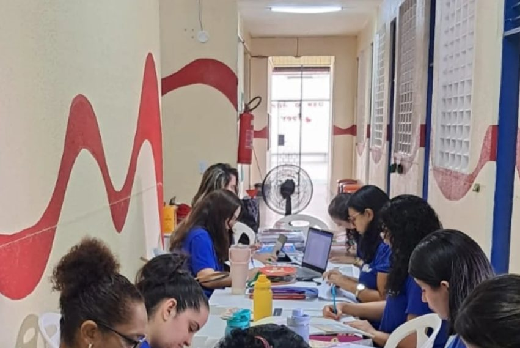
No Ensino Médio o foco é o ENEM e os vestibulares, sem abrir mão do que faz o ADM ser o ADM: laboratório, debate, projeto e gente que conhece cada aluno pelo nome.
Diário de bordo
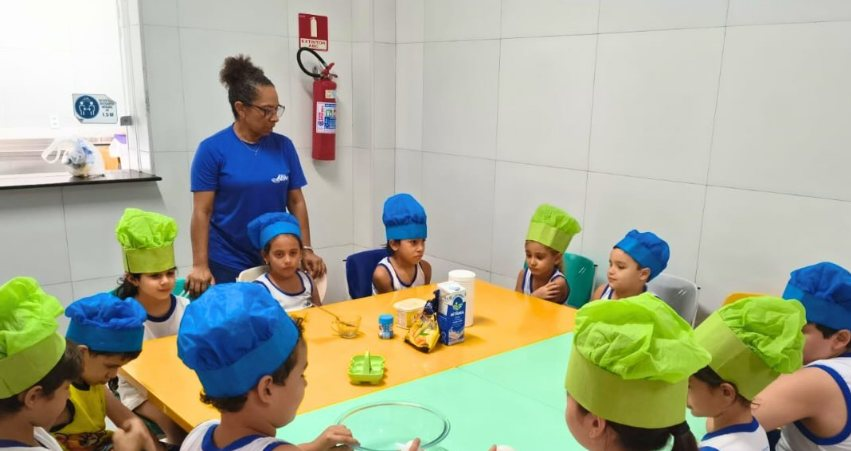
Medir, misturar, esperar. Receita também ensina número e paciência.
Lâmina, lente e anotação. A biologia saiu do livro e foi para o microscópio.
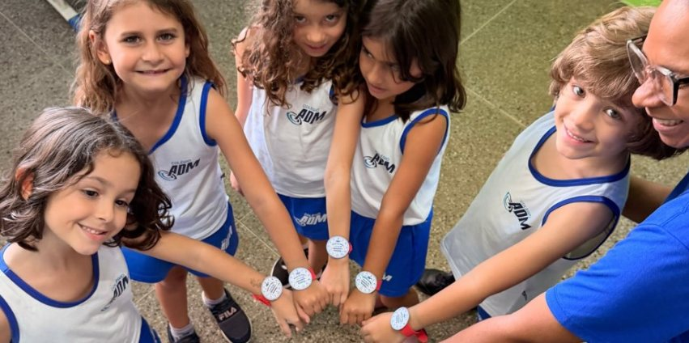
A roda antes da aula, onde todo mundo tem vez de falar.
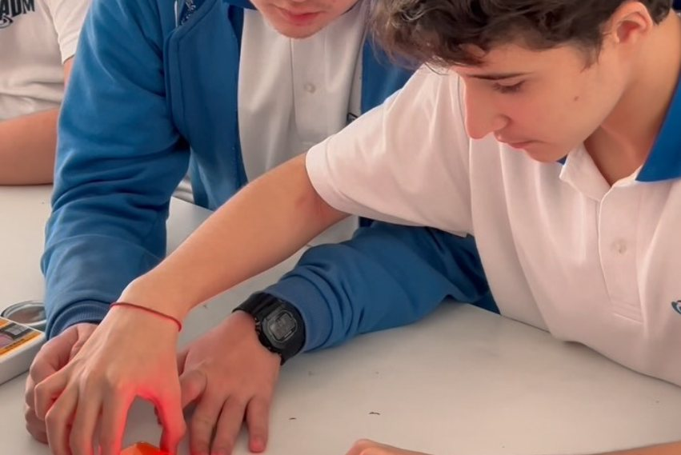
Rotina de estudo orientada, em dupla, com a mão na massa.
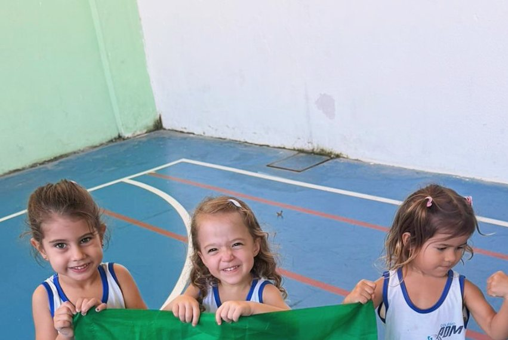
Uma semana descobrindo cores, símbolos e a história da nossa bandeira.
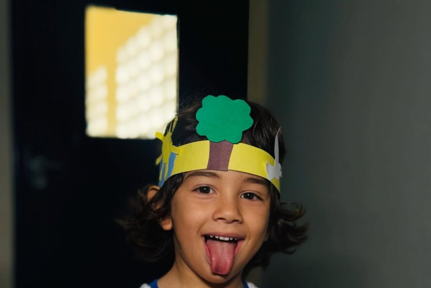
A coroa foi feita por ele. A consciência também está sendo.
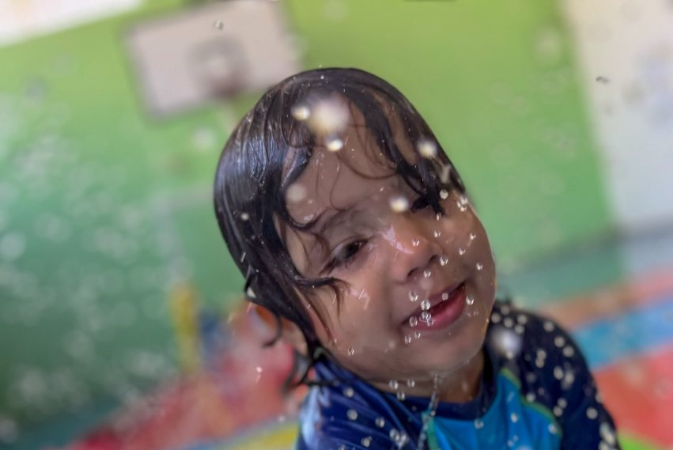
Porque infância também precisa de bagunça bem planejada.
Nossa história
“Ao longo dessas décadas, crescemos, inovamos e nos fortalecemos, sempre guiados pelos nossos valores.”
Luiza e Tereza, direção do Colégio ADM, na celebração dos 35 anos
Trinta e cinco anos depois, o compromisso segue o mesmo: educar com excelência, com afeto e com gente que conhece cada aluno pelo nome.
Os valores que sustentam a casa
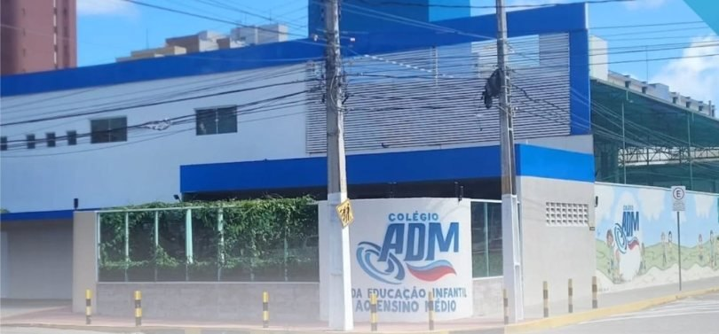
Rua Firmino Rocha Aguiar, 600
Estrutura
Uma estrutura pensada estrategicamente para atender o desenvolvimento dos alunos, da Educação Infantil ao Ensino Médio.
Família e escola
Encontros como a Conexão Família-Escola, palestras com especialistas e um canal aberto com a coordenação fazem parte do calendário. Você sabe o que seu filho está aprendendo, e por quê.
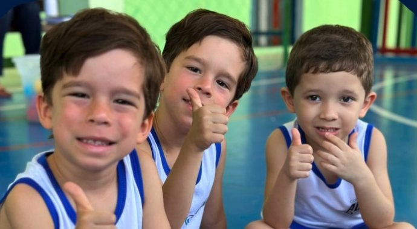
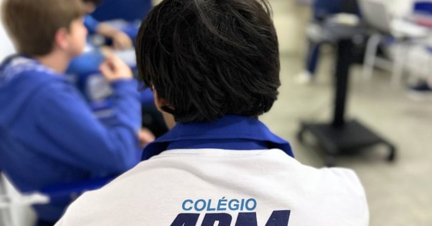
Dúvidas frequentes
Não achou o que procurava? A secretaria responde pelo WhatsApp.
Sim. As matrículas 2027 estão abertas para todos os segmentos, da Educação Infantil ao Ensino Médio. As vagas são limitadas por turma, então vale garantir cedo.
Pode e deve. Agende uma visita pelo formulário aqui embaixo ou pelo WhatsApp. Você conhece os espaços, conversa com a coordenação e tira todas as dúvidas.
Significa que o aluno aprende construindo o conhecimento a partir da experiência: investigando, testando hipóteses e resolvendo desafios, com o professor como mediador. Nada de decorar sem entender.
A lista pode variar conforme o segmento. Pelo WhatsApp a secretaria envia a relação completa e explica cada etapa.
Rua Firmino Rocha Aguiar, 600, no Guararapes, em Fortaleza (CEP 60810-165).
Matrículas 2027
Preencha e a mensagem já sai pronta no WhatsApp da secretaria. Leva menos de um minuto.